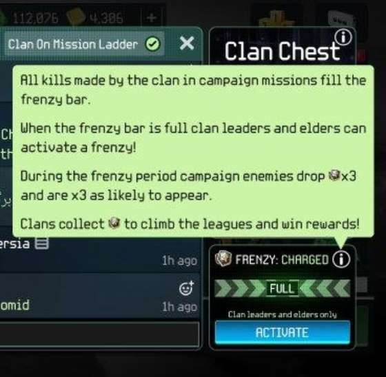
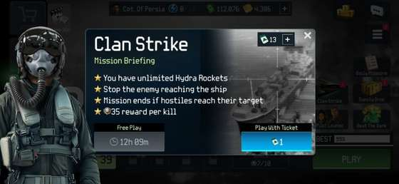
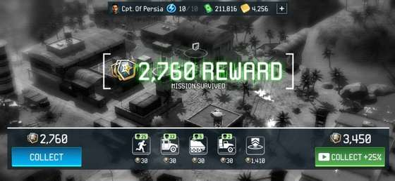

اگر تازه وارد کلن شدهای، لازم نیست از قبل معنی همه اصطلاحها را بدانی. این صفحه از پایه توضیح میدهد فرنزی چیست، نوار آن چطور پر میشود، دشمن طلایی چه اهمیتی دارد، کدام کارتها به مدال کلن کمک میکنند و چطور مرحله مناسب را پیدا کنی.
از صفر شروع کنیم
فرنزی (Frenzy) چیست و چرا کلن منتظر پرشدن آن میماند؟
در صفحه گفتوگوی کلن، یک نوار مخصوص فرنزی میبینی. این نوار بهصورت خودکار پر نمیشود. اعضای کلن با بازیکردن مرحلهها و کشتن دشمنها به پرشدن آن کمک میکنند. راه دیگر این است که اعضا طلا خرج کنند.

در این قسمت میتوانی وضعیت شارژ فرنزی و اطلاعات مربوط به دشمنهای نشاندار طلایی را ببینی.
بعد از فعالشدن فرنزی، بعضی دشمنها با نشانه طلایی ظاهر میشوند. کشتن این دشمنها برای گرفتن مدال کلن (Clan Medal) مهم است. بنابراین هدف این نیست که فقط بالاترین مرحلهای را که داری بازی کنی؛ هدف این است که مرحلهای را پیدا کنی که در همان فرنزی، سریع و پیوسته مدال خوبی بدهد.
برای کلن PERSIA: وقتی رقابت ساده است، طلا را فقط برای پرکردن نوار فرنزی مصرف نکن. بهتر است اعضا با بازیکردن ریتم کلن را حفظ کنند و طلا برای موقعیتهای مهمتر ذخیره شود.
یک نکته مهم درباره نوسان امتیاز
چرا یک مرحله در یک فرنزی عالی است ولی دفعه بعد ممکن است ضعیف باشد؟
مدال فرنزی همیشه عدد ثابتی نیست. تجربه عملی بازیکنان نشان داده یک مرحله ممکن است در یک نوبت مدال بسیار خوبی بدهد و در نوبت بعد همان نتیجه را تکرار نکند. پس روی یک مرحله قفل نشو و نتیجه همان فرنزی را ملاک قرار بده.
مرحله ۵ · نمونه قویدر یک نوبت فرنزی، حدود ۱۷۰۰ مدال کلن در یک دور ثبت شده است.
همان مرحله · نمونه ضعیفتردر نوبتهای دیگر، دورهایی نزدیک ۳۰۰ مدال هم دیده شدهاند.
گاهی حتی خیلی کم یا صفرمرحلهای که معمولاً خوب است ممکن است در یک فرنزی خاص تقریباً هیچ مدال قابلتوجهی ندهد.
روش پیشنهادی: در شروع فرنزی، یک یا دو دور آزمایشی بزن. اگر مدال نسبت به زمان بازی کم بود، سریع مرحله بعدی پیشنهادی را امتحان کن.
پیشنهاد مرحله برای فرنزی
با توجه به مرحله فعلی من، اول کدام مرحلهها را امتحان کنم؟
شماره آخرین مرحلهای را که برایت باز شده وارد کن. ابزار فقط مرحلههایی را پیشنهاد میدهد که در دسترس تو هستند. حتی اگر مثلاً به مرحله ۱۳ رسیدهای، مرحلههای قدیمیتر مثل ۵، ۸، ۹ و ۱۰ هنوز میتوانند برای فرنزی ارزش امتحانکردن داشته باشند.
اگر به مرحله ۱۳ رسیده باشی، فقط گزینههای مرحله ۱ تا ۱۳ بررسی میشوند.
مرحلههایی که تا — میتوانی امتحان کنی
اگر دو مرحله تقریباً مدال مشابهی میدهند، معمولاً مرحلهای که سریعتر تمام میشود انتخاب بهتری است. برای کلن، مدال در دقیقه از عدد نهایی یک دور مهمتر است.
کارتهای مخصوص مدال کلن
این چهار کارت چه کاری انجام میدهند و کدامشان به درد من میخورد؟
Clan Medal Spotter شانس پیداشدن دشمنهای دارای نشان طلایی را بیشتر میکند. سه کارت دیگر مقدار مدالی را که از کشتن دشمن طلایی میگیری افزایش میدهند، اما هرکدام برای یک سلاح هستند.
1
Clan Medal Bonus: وقتی ضربه نهایی را با مسلسل 25mm میزنی، مدال بیشتری میگیری.
2
Clan Medal Buster: برای کشتن دشمن طلایی با هایدرا (Hydra-70) است.
3
Clan Medal Breaker: برای کشتن دشمن طلایی با هلفایر (Hellfire) است.
نمونه کارتهای داخل جعبه بنفش کلن؛ کارتهای افزایش مدال کلن هم در همین گروه قرار دارند.
اگر بیشتر دشمنها را با مسلسل 25mm از بین میبری، کارت Bonus برایت کاربردیتر است. در مرحلههای شلوغ ممکن است هایدرا ارزش بیشتری داشته باشد و برای هدفهای زرهی سنگین، هلفایر مهمتر میشود.
جعبه بنفش کلن
چرا جعبه بنفش فقط برای گرفتن کارت نیست؟
جعبه بنفش کلن (Clan Chest) با ۲۰۰۰ طلا، ۱۲ کارت، حداقل یک کارت افسانهای (Legendary)، ۳۰۰۰ مدال کلن و ۳ بلیت رقابت کلن میدهد. یعنی با یک خرید هم کارت میگیری، هم مدال کلن و هم بلیت برای فعالیت بعدی ذخیره میکنی.
منظور از جعبه بنفش کلن همین گزینه ۲۰۰۰ طلاست.رقابت کلن (Clan Strike)
بلیتهای کلن را چه زمانی خرج کنم و چه زمانی نگه دارم؟
بلیتها در بخش رقابت کلن (Clan Strike) مصرف میشوند. اگر در لیگ یا رقابت فعلی اختلاف زیادی با رقیب دارید، لازم نیست همه بلیتها را خرج کنی. نگهداشتن آنها برای زمانی که رقابت نزدیکتر و سختتر است معمولاً ارزش بیشتری دارد.

در صفحه رقابت کلن، مقدار پاداش هر کیل و گزینه ورود با بلیت را میبینی.

نمونه پایان یک دور و گزینه دریافت پاداش بیشتر با دیدن ویدئو.
در یک نمونه ثبتشده، پاداش پایه حدود ۲۷۶۰ بوده و با گزینه ویدئویی ۲۵٪ به حدود ۳۴۵۰ رسیده است. این عدد ثابت نیست و میتواند با شرایط بازی تغییر کند.